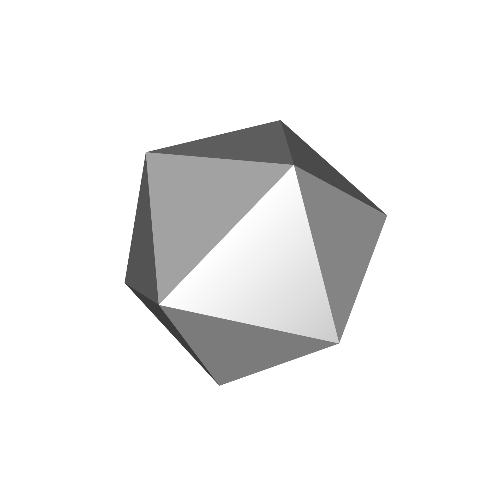
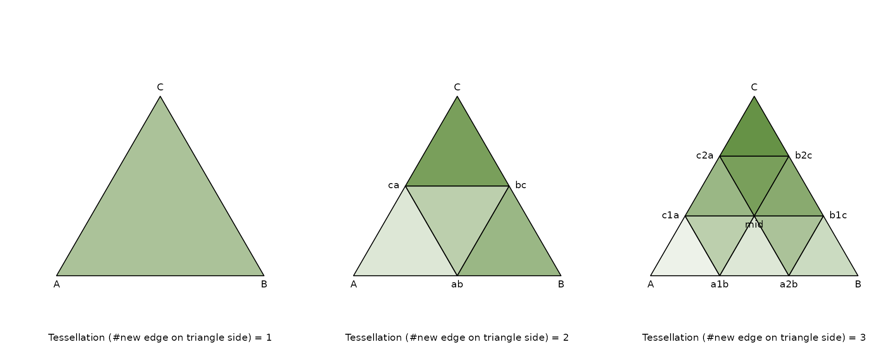
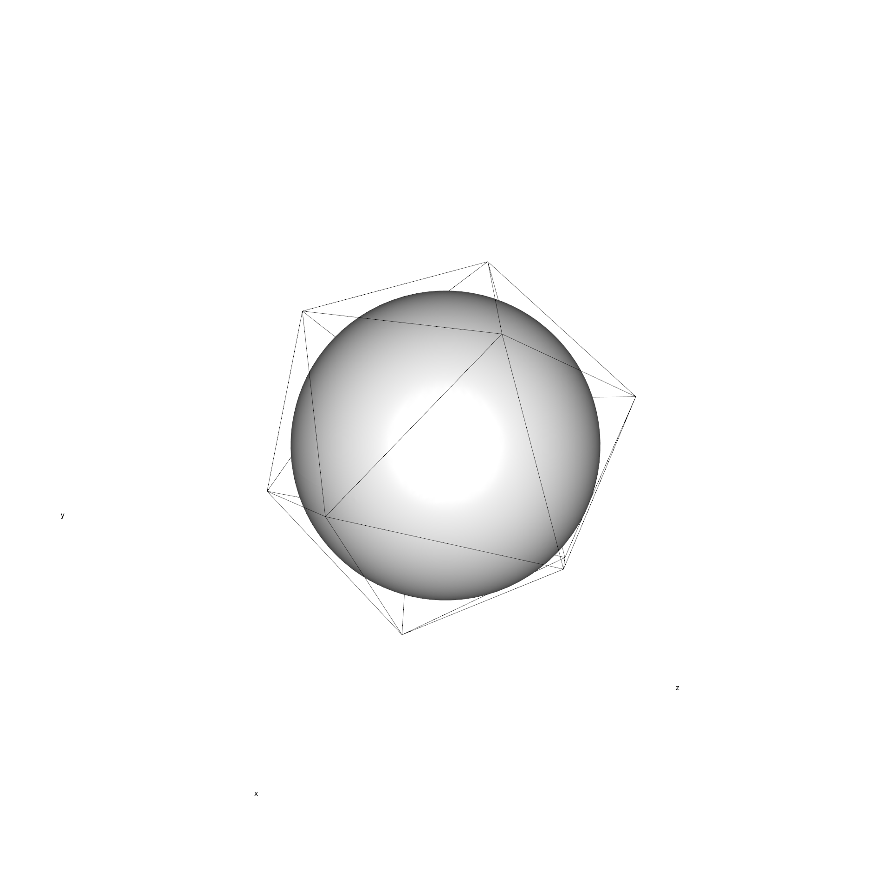
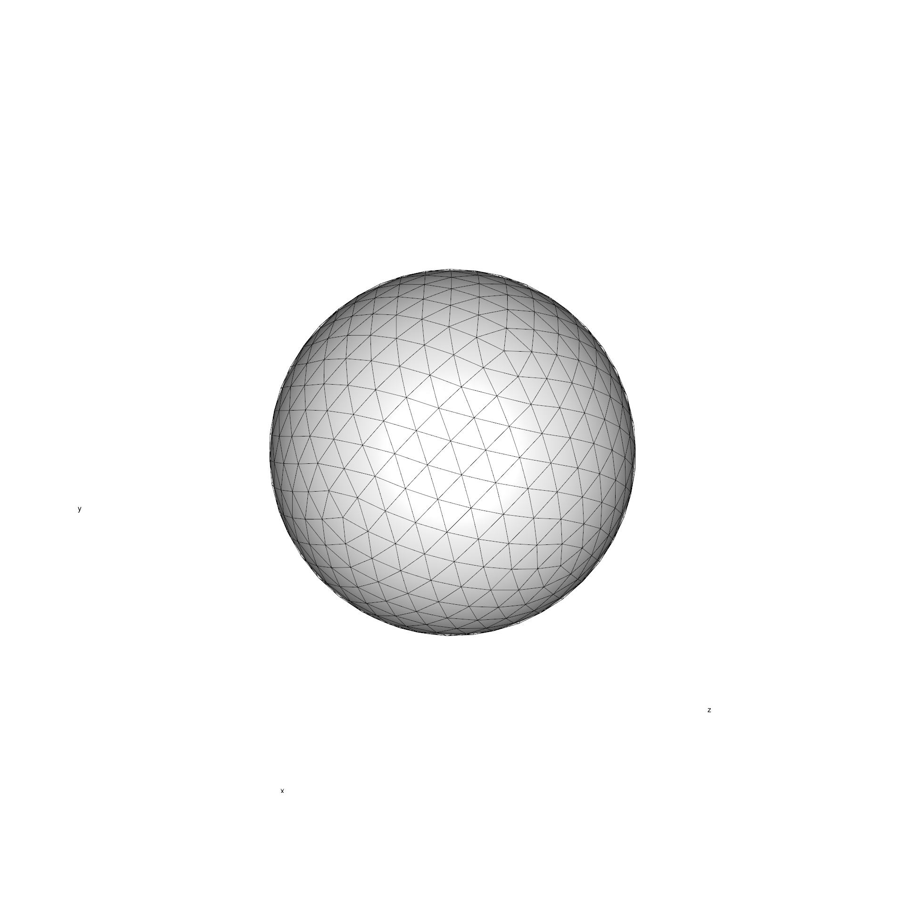
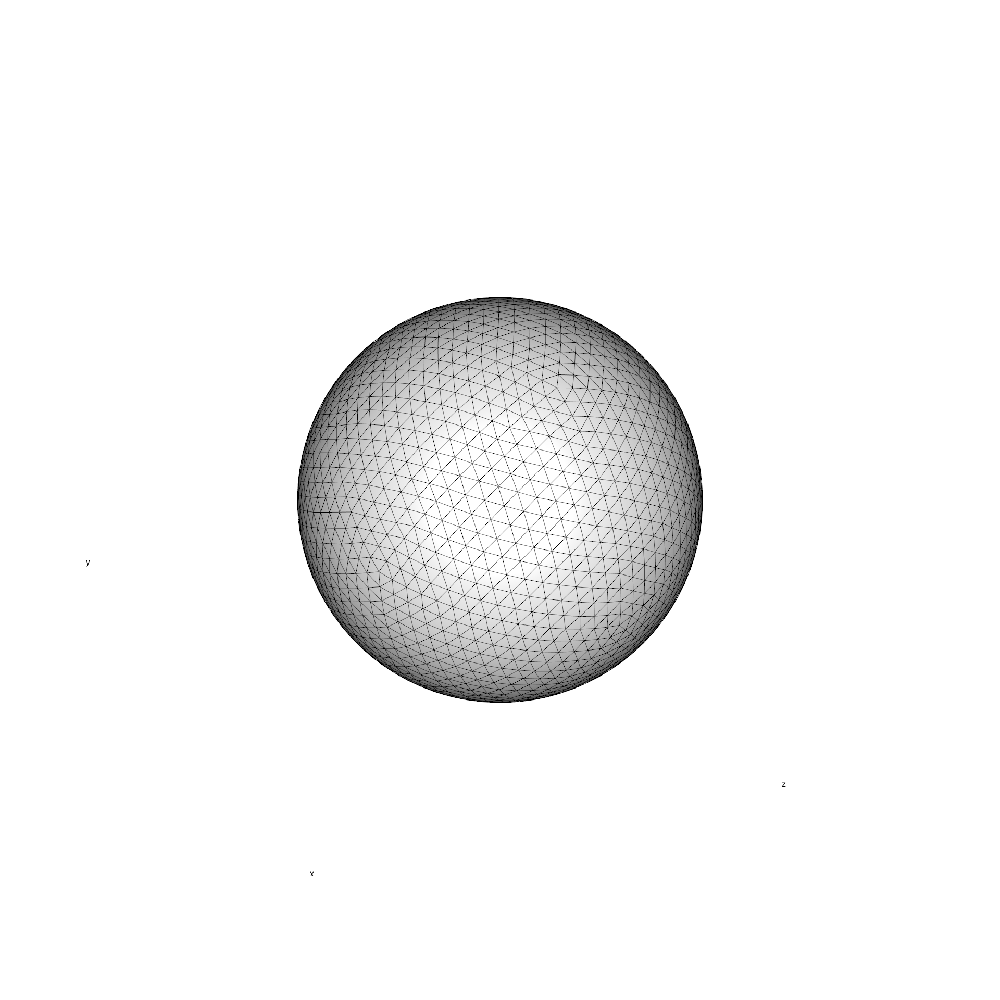
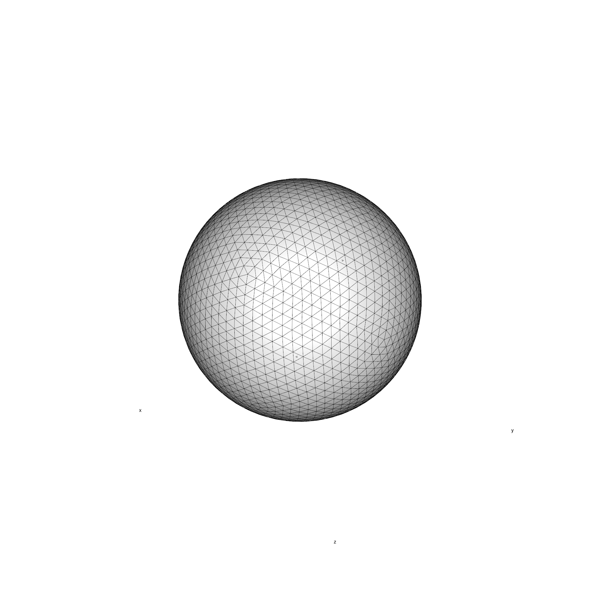
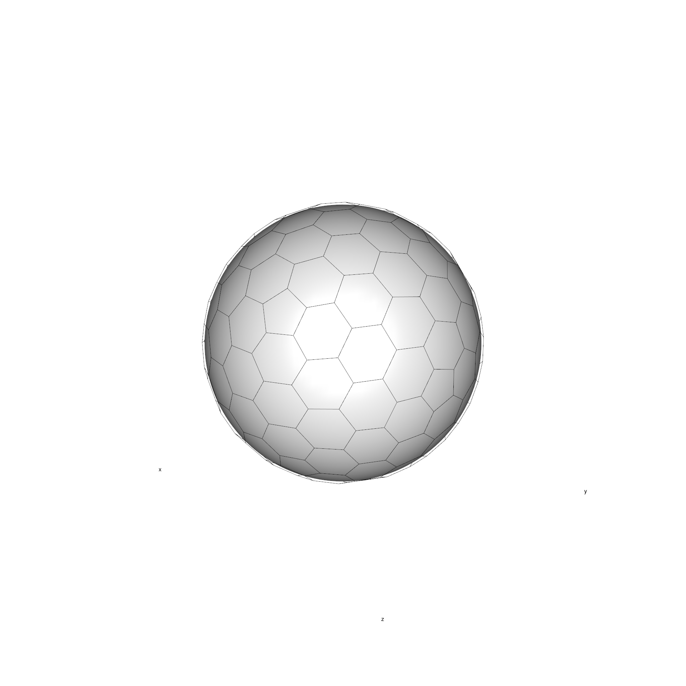

Introduction
Grid objects are used as reference points for the geometry of 2D and
3D operations. This tutorial focuses on the grid structures, how the
grids are derived, how and the types that can be created with
icosa.
Grids as objects
In their basic form, the grids themselves are 3D objects, that consist of vertices (points), edges (segments between two points), and faces (polygons defined with a sequence of points). In spatial analyses, faces are usually referred to as cells.
Note that only points have 3D information, both edges and faces are
defined using them: which effectively means that that it is up to the
interpretation whether edges are interpreted as linear segments (that
define polyhedra), or arcs: i.e. portions of great circle segments.
Similarly, faces can be interpreted both as planar triangles and as
spherical triangles. All calculations in icosa are
implemented in XYZ Cartesian space.
In order to derive the grids icosa uses a spherical
model for Earth, which is based on the authalic radius
(6371.007 km, the radius of a sphere that has the same volume as the
actual shape of the planet) as defined in ESRI:37008.
The ideal grid
An optimal horizontal grid would have completely uniform structure, with its points distributed completely evenly on the sphere. This means that faces (i.e. cells) defined using these points would have identical size, shape and relative distance from each other - a criterion that that turns out to be problematic: only the platonic solids have vertices that fulfill these criteria perfectly.
In the icosa package all grids are derived from the regular icosahedron, a platonic solid that has the highest
number of faces, which is 20 (seen below):
Source

This coarse resolution is hardly acceptable for the analysis of spatial heterogeneity, which means that we have to find a way to increase the number of cells in a uniform way.
Tessellation
Tessellation is the process of taking a polygon (i.e. triangle), and breaking it up into smaller triangles. Tessellation of a regular triangle is trivial, but it is useful to illustrate the concept (e.g. below).
Source
# very verbose code to produce the figure below...
par(mfrow=c(1,3))
# This is a beautiful programming exercise:
# can you implement a function that does this for an arbitrary number of edges?
# tessellation = 1
plot(
NULL, NULL, xlim=c(0,1), ylim=c(0,1), axes=FALSE,
xlab="Tessellation (#new edge on triangle side) = 1",
ylab="", asp=1, cex.lab=1)
# original points of a regular triangle
A <- c(0,0)
B <- c(1,0)
C <- c(0.5, sqrt(3)/2)
# triangle- as matrix
triangle <- rbind(A, B, C)
# draw
polygon(triangle, col=rgb(0.34,0.53,0.2, 0.5))
# the point
text(
x=triangle[,1], y=triangle[,2],
label=rownames(triangle), pos=c(1,1, 3))
# ------------------------------------------------------------------------------
# tessellation =2
# breaking segments in two - mid between points
ab <- (A+B)/2
bc <- (B+C)/2
ca <- (C+A)/2
# create new set of triangles
triangle1 <- rbind(A, ab, ca)
triangle2 <- rbind(ca, ab, bc)
triangle3 <- rbind(ab, B, bc)
triangle4 <- rbind(ca, bc, C)
# empty plot
plot(
NULL, NULL, xlim=c(0,1), ylim=c(0,1), axes=FALSE,
xlab="Tessellation (#new edge on triangle side) = 2",
ylab="", asp=1, cex.lab=1)
# te colors of the triangles
greens <- rgb(0.34,0.53,0.2, seq(0,1,length.out=4+2))
# plot the triangles
polygon(triangle1, col=greens[2])
polygon(triangle2, col=greens[3])
polygon(triangle3, col=greens[4])
polygon(triangle4, col=greens[5])
# the points
unpoint <- rbind(A, B, C, ab, bc, ca)
# putl labels
text(
x=unpoint[,1], y=unpoint[,2],
label=rownames(unpoint), pos=c(1,1, 3, 1, 4, 2))
# ------------------------------------------------------------------------------
# tessellation = 3
# points derived with simple coordinate geometry
# difference vector reduced, offset from subtracted
a1b <- (B-A)/3 + A
a2b <- (B-A)/3*2 + A
b1c <- (C-B)/3 + B
b2c <- (C-B)/3*2 + B
c1a <- (C-A)/3 + A
c2a <- (C-A)/3*2 + A
mid <- (A+B+C)/3
# the triangles
triangles <- list()
triangles[[1]] <- rbind(A, a1b, c1a)
triangles[[2]] <- rbind(a1b, a2b, mid)
triangles[[3]] <- rbind(a2b, B, b1c)
triangles[[4]] <- rbind(a1b, mid, c1a)
triangles[[5]] <- rbind(a2b, b1c, mid)
triangles[[6]] <- rbind(c1a, mid, c2a)
triangles[[7]] <- rbind(mid, b1c, b2c)
triangles[[8]] <- rbind(mid, b2c, c2a)
triangles[[9]] <- rbind(c2a, b2c, C)
# define color sequence
greens <- rgb(0.34,0.53,0.2, seq(0,1,length.out=length(triangles)+2))
# empty plot
plot(
NULL, NULL, xlim=c(0,1), ylim=c(0,1), axes=FALSE,
xlab="Tessellation (#new edge on triangle side) = 3",
ylab="", asp=1, cex.lab=1)
# plotting the triangles
for(i in 1:length(triangles)) polygon(triangles[[i]], col=greens[i+1])
# the point coordinates
unpoint <- rbind(
A, B, C,
a1b, a2b, b1c, b2c, c1a, c2a,
mid)
# the names of the points
text(
x=unpoint[,1], y=unpoint[,2],
label=rownames(unpoint),
pos= c(1, 1, 3, 1, 1, 4, 4, 2, 2, 1))
In this case, the edges of the triangles are split to equal segments, which in turn define smaller regular triangles. The number of resulting segments on an original edge defines the resulting number of triangles: if there are n new segments, there will be \(n^2\) number of triangles.
Moreover, once the new triangles are created, the process can be repeated recursively, creating a newer, smaller set of triangles. This recursive iteration can be represented as a vector of positive integer numbers (which we can call the tessellation vector), for example:
c(2,3,2)Which indicates that that the edge of a triangle is to split once into two (leading to 4 triangles), and then all resulting edges to be split into 3 (creating \(4 * 3^2 = 36\) triangles), and then the resulting edges are also split into 2, leading to a total of \(36 * 4 = 144\) triangles. This means that a total of \(2 * 3 * 2 = 12\) (i.e. the product of the tessellation vector) resulting edges will be created for every original edge (note that \(12^2 = 144\)!). In the planar case and with regular triangles, this leads to the same result as doing a single 12-fold subdivision, but leads to slightly different results in the spherical case.
Since an icosahedron has 20 triangles/faces, the total number of faces will be \(n^2 * 20\). Therefore the tessellation vector is the control of grid resolution.
Despite its intuitive nature, the implementation of this process is not trivial for spherical triangles (which have arcs instead of linear segments as edges) and becomes a source of distortions (see below). The exact implementation will be explained in a later article focusing on the tessellation.
Triangular grids
Triangular grids are directly dervied from the regular icosahedron
using a spherical version of the tessellation method described above.
These (and all other grids, including the hexagrids) belong in the
trigrid-class and can be constructed with the
trigrid() function.
A primitive triangular grid
Without any arguments, this will construct a regular icosahedron - with all the attributes that any other grid object has.
# loading the package
library(icosa)
# create a trigrid class object
tri <- trigrid()
# the show() method displays basic information of the object
tri## A/An trigrid object with 12 vertices, 30 edges and 20 faces.
## The mean grid edge length is 7053.65 km or 63.43 degrees.
## Use plot3d() to see a 3d render.All calculations are natively done in xyz Cartesian space, and (as
indicated above) this can be visualized with 3D plotting tools. The
implemented 3d plotting functions work with R’s interactive
implementation of openGL (in the CRAN package rgl) - see
later tutorials about details.
A simple icosahedron looks as such (with an internal sphere added to make the render more intuitive to understand):
Source
# warnings occur on some systems due to rgl fonts
suppressWarnings(plot3d(tri, guides=F))
Without any specified additional entry, the created object will an
icosahedron with the center of c(0,0,0) Cartesian
coordinates and the authalic radius of Earth used as the distance
between the object center and the vertices. These can be altered by
setting the radius and center arguments if
necessary (e.g. for composing 3d imagery).
Tessellating a triangular grid
Setting the first, tessellation argument of the
trigrid() function can be used to create higher-resolution
grids. The input to this argument is a tessellation
vector as described above. For instance this
line of code will instantiate a triangular grid with the tessellation
vector set to 8 (every side of the icosahedron is split
into 8 new edges):
## A/An trigrid object with 642 vertices, 1920 edges and 1280 faces.
## The mean grid edge length is 961.08 km or 8.64 degrees.
## Use plot3d() to see a 3d render.Source
# plot the object in 3d
suppressWarnings(plot3d(gl, guides=F))
Choosing a vector with a higher product leads to a more complex, higher-resolution grid:
## A/An trigrid object with 2562 vertices, 7680 edges and 5120 faces.
## The mean grid edge length is 481.07 km or 4.33 degrees.
## Use plot3d() to see a 3d render.Source
# plot the object in 3d
suppressWarnings(plot3d(gh, guides=F))
Controlling grid resolution
You have probably noted the decrease in overall performance - which
is the overhead of the 3D implementation and the flexibilty that these
grids offer: the higher the tessellation, the longer it takes to
calculate a grid, and the bigger it is in the computer’s memory. Also,
tessellation is easy to understand from the point of creating a grid,
but it is very unintiutive from the point of application, where we tend
to think in degrees and kilometers. If you would like
to explore the connection between grid resolution, size, performance and
tesselation, you can do so using the triguide built-in
object.
## 'data.frame': 120 obs. of 18 variables:
## $ total : num 1 2 3 4 5 6 7 8 9 10 ...
## $ level1 : num 1 1 1 2 1 2 1 2 3 2 ...
## $ level2 : num 1 2 3 2 5 3 7 4 3 5 ...
## $ level3 : int NA NA NA NA NA NA NA NA NA NA ...
## $ level4 : logi NA NA NA NA NA NA ...
## $ faces : int 20 80 180 320 500 720 980 1280 1620 2000 ...
## $ vertices : int 12 42 92 162 252 362 492 642 812 1002 ...
## $ meanEdgeLength_deg: num 63.4 33.9 22.9 17.2 13.8 ...
## $ sdEdgeLength_deg : num 0 2.15 1.291 1.12 0.702 ...
## $ meanEdgeLength_km : num 7054 3765 2541 1914 1534 ...
## $ sdEdgeLength_km : num 0 239.1 143.5 124.6 78.1 ...
## $ meanArea_km2 : num 25503281 6375820 2833698 1593955 1020131 ...
## $ sdArea_km2 : num 0 537061 173567 137740 41942 ...
## $ time : num 0.019 0.021 0.026 0.03 0.043 ...
## $ time_sf : num 0.265 0.363 0.513 0.726 0.994 ...
## $ size : chr "0.03 MB" "0.07 MB" "0.14 MB" "0.25 MB" ...
## $ size_sf : chr "0.07 MB" "0.24 MB" "0.52 MB" "0.92 MB" ...
## $ timeLocate_5000 : num 0.017 0.019 0.021 0.02 0.027 ...Check out ?triguide for the meaning of the columns You
can use this object to
To make the instantiation of grids somewhat more straightforward, you
can also provide the desired edge-length in degrees (argument
deg), and tessellation vector that leads to the closest
result will be provided to you. For instance, if you would like to have
a grid with approximately 5° of edge length, you can get it with:
five <- trigrid(deg=5)## Selecting trigrid with tessellation vector: c(2, 7).
## Mean edge length: 4.944 degrees.
five## A/An trigrid object with 1962 vertices, 5880 edges and 3920 faces.
## The mean grid edge length is 549.79 km or 4.94 degrees.
## Use plot3d() to see a 3d render.Note that this will not lead to an exactly 5°- resolution grid, but it still can serve as a good approximation.
Hexagonal grids
Rationale
Triangular grids are intutive ways of breaking up a spherical surface to similar entities and they can be used for discretization of spatial. You could register data at the centers of the triangles, but there are several problems with that: triangular cells are very anisometric, the vertices are very far away from the cell centerpoints compared to the middle of the edges, so the degree to which a single point can represent points in the cell varies.
Source
par(mfrow=c(1,4))
# This is a beautiful programming exercise:
# can you implement a function that does this for an arbitrary number of edges?
green <- rgb(0.34,0.53,0.2, 0.5)
# triangle
plot(
NULL, NULL, xlim=c(0,1), ylim=c(0,1), axes=FALSE,
xlab="",
ylab="", asp=1, cex.lab=1)
# original points of a regular triangle
A <- c(0,0)
B <- c(1,0)
C <- c(0.5, sqrt(3)/2)
# triangle- as matrix
triangle <- rbind(A, B, C)
# draw
polygon(triangle, col=green)
text(triangle[,1],triangle[,2], label=rownames(triangle),pos=c(1,1,3))
# triangle midpoint
mid <- (A+B+C)/3
text(label="O", x=mid[1], y=mid[2], pos=1)
# midpoint - vertex
segments(x0=mid[1], x1=B[1], y0=mid[2], y1=B[2])
midb <- (B+mid)/2
text(x=midb[1], y=midb[2], label=paste0("a = ", round(sqrt(sum((mid-midb)^2)),2)), pos=4)
# midpoint - edgemid
bc <- (B+C)/2
segments(x0=mid[1], x1=bc[1], y0=mid[2], y1=bc[2], col="gray50")
midbc <- (mid+bc)/2
text(x=midbc[1], y=midbc[2], label=paste0("b = ", round(sqrt(sum((mid-midbc)^2)),2)), pos=2, col="gray50")
# ------------------------------------------------------------------------------
# square
plot(
NULL, NULL, xlim=c(-0.05,1.05), ylim=c(-0.05,1.05), axes=FALSE,
xlab="",
ylab="", asp=1, cex.lab=1)
A <- c(0,0)
B <- c(1,0)
C <- c(1,1)
D <- c(0,1)
square <- rbind(A, B, C, D)
polygon(square, col=green)
text(square[,1],square[,2], label=rownames(square),pos=c(1,1,3,3))
# midpoint
mid <- (A + B + C + D)/4
text(x=mid[1], y=mid[2], label="O", pos=1)
# mid-vertex
segments(x0=mid[1], x1=1, y0=mid[2], y1=1)
# mid edge mid
segments(x0=mid[1], x1=0.5, y0=mid[2], y1=1)
# ------------------------------------------------------------------------------
# hexagon
plot(
NULL, NULL, xlim=c(-0.05,1.05), ylim=c(-0.05,1.05), axes=FALSE,
xlab="",
ylab="", asp=1, cex.lab=1)
# ------------------------------------------------------------------------------
# A circle
plot(
NULL, NULL, xlim=c(0,1), ylim=c(0,1), axes=FALSE,
xlab="",
ylab="", asp=1, cex.lab=1)
rad <- seq(0, 2*pi, length.out=360)
circle <- cbind(x=cos(rad)*0.5+0.5, y=sin(rad)*0.5+0.5)
polygon(circle, col=green)
text(label="O", x=0.5, y=0.5, pos=1)
O <- c(0.5, 0.5)
A <- circle[45, ]
B <- circle[120, ]
segments(x0=0.5, x1=c(A[1], B[1]), y0=0.5, y1=c(A[2], B[2]))
oa <- (O+A)/2
ob <- (O+B)/2
text(oa[1], oa[2], pos=4, label="r = 0.5")
text(ob[1], ob[2], pos=2, label="r = 0.5")
Also, some spatial calculations rely on the concept of neighborhood - knowning what cells are in contact. Triangular grids summer from the same issues as rectangular grids: neighborhood can be defined differently, depending on the pattern of contact. Based on analogies from chess, you talk either about a ‘rook’ or ‘queen’-neighborhood, when shared edges or shared vertices are considered to be the base criteria for neighborhood, respectively.
Grid inversion
Using hexagons solve both of these problems. Hexagonal-cells can be
defined with inversion: replacing the grid vertices with face-centers of
the triangular grids, and inserting vertices at the center of of the
faces. This inversion operation follows the tessellation procedure, and
uses already created trigrid-class objects and produces
hexagrid-class entities:
Executing this proces on the icosahedron
(tessellation=1), ironically, produces an object without
any hexagonal faces, the result of this operation is a regular
pentagon-dodecahedron:
# create a hexagrid class object
dodecahedron <- hexagrid(tessellation=1)
dodecahedron## A/An hexagrid object with 20 vertices, 30 edges and 12 faces.
## The mean grid edge length is 4649.1 km or 41.81 degrees.
## Use plot3d() to see a 3d render.Source
# plot the object in 3d
# warnings occur on some systems due to rgl fonts
suppressWarnings(faces3d(dodecahedron, guides=F, col="gray"))
# rotate viewport
view3d( theta =80, phi = 40)
Hexagons are introduced when more complex triangular grids are inverted.
# create a hexagrid class object
hexa <- hexagrid(tessellation=4)
hexa## A/An hexagrid object with 320 vertices, 480 edges and 162 faces.
## The mean grid edge length is 1111.9 km or 10 degrees.
## Use plot3d() to see a 3d render.Source
# plot the object in 3d
# warnings occur on some systems due to rgl fonts
suppressWarnings(plot3d(hexa, guides=F))
# rotate viewport
view3d( theta =80, phi = 40)
As a matter of fact, it is impossible to create these hexagonal grids without the introduction of pentagons, exactly 12 of them, that are positioned at the vertices of the icosahedron. For this reason, it is better to call these penta-hexagonal grids.
These objects are practically Goldberg polyhedra.